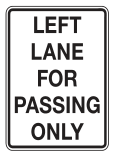
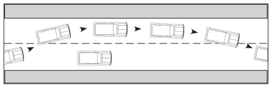
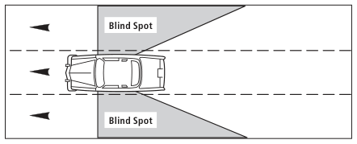
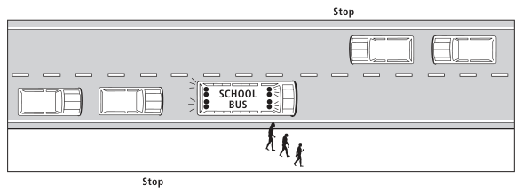
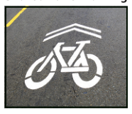

FACT crashes resulting from improper passing oftenS result in head-on crashes AND can be deadly
S 範圍含糊Hedged scope“often”: 保留語氣的概括說法。Hedged generalisation.
出處Source
超車規則Passing rules
Wise Lab · 德州駕駛手冊Wise Lab · Texas Driver Handbook
把手冊裡的超車內容寫成形式化規則：一套小而固定、讀起來仍像英文的規則語言，每條都連回它來自的原句。The handbook’s passing content as formal rules, in a small rule language that still reads like English. Every rule links back to the sentence it came from.
來源Source: Texas Driver Handbook版本Edition: DL-7, revised January 2026離線副本Offline copy: 2026-10-20 (handbooks/tx/)單位Units: US customary (ft, mi, mph)US customary (ft, mi, mph)
規則語言 v1Rule language v1
每條敘述都套用固定模板：大寫關鍵字負責邏輯，中間的一般英文負責內容。Each statement fills a fixed template: keywords in capitals carry the logic, plain English between them carries the content.
規則語言 · 01Rule language · 01
一段手冊原文，和由它寫成的規則，逐部分標示。One handbook passage and the rule written from it, part by part.
When passing a cyclist, drivers of motor vehicles must maintain a minimum distance of one metre, where practical between their vehicle and the cyclist. (See Diagram 2-11.) Failure to do so may result in a fine and an additional two demerit points on the driver’s record.
規則語言 · 02Rule language · 02
五種敘述，各有固定模板。… 填一般英文，… 可省略。Five kinds of statement, each with a fixed template. … is plain English; … is optional.
規則語言 · 03Rule language · 03
這就是全部的關鍵字。不是關鍵字的部分都是一般英文，照用詞規範寫。The complete keyword set. Everything that is not a keyword is plain English, written by the wording rules.
大寫是關鍵字 · 綠色名稱在此定義 · 灰色名稱填一般英文（其中也可用 AND OR NOT 連接片語）· { } 可重複 · [ ] 可省略 · | 表示「或」CAPITALS are keywords · green names are defined here · grey names are plain English (where AND OR NOT may also join phrases) · { } repeats · [ ] is optional · | means or
規則語言 · 04Rule language · 04
法律效力只來自手冊用語。由上往下取第一個符合的；FORCE FROM 記下是哪一條。Legal force comes only from the handbook’s wording. Take the first line that applies; FORCE FROM records which.
Passing within 30 metres of a pedestrian crossover is not permitted.→3.1.1a
You may drive on the right shoulder only to pass a vehicle turning left …→3.2.4a
Avoid passing, changing lanes and crossing traffic.→3.3.2a
Never overtake and pass another vehicle unless you are sure …→2.1b
… watch carefully for people suddenly opening doors …→3.4.1a
用語和預設不一致時，維持預設並加 M 標記，不靠猜測提高效力。“Don’t pass moving snow plows under any conditions” 沒有法律用語，所以維持 SHOULD NOT 並標 M。Wording and default disagree? Keep the default and add an M flag; force is never raised by guessing. “Don’t pass moving snow plows under any conditions” has no legal word, so it stays SHOULD NOT with M. 3.4.9a
超車規則：19 條法規、52 條建議、7 個 M 標記。In the passing rules: 19 law, 52 advice, 7 M flags.
規則語言 · 05Rule language · 05
關鍵字之間的英文也有固定規範，同一件事永遠只有一種說法。The English between the keywords follows fixed rules, so one thing is always said one way.
先用 “a …”，再用 “the …”，不用 “you”。用原文撐得起的最具體角色。“a …” first, then “the …”; never “you”. Use the most specific role the source supports.
And do not speed up when another driver is trying to pass you.→a driver being passed MUST NOT speed up 3.6.1b
規則永遠只用一種說法；手冊用詞不一致處標 V。The rules always use one phrase; where the handbook drifts, a V flag.
用數字與簡短單位；比較只用 at least、at most、more than、less than、within … of。Digits and short units; compare only with at least, at most, more than, less than, within … of.
照原文保留，標成 [?…] 並標記；不發明門檻。Kept as written, marked [?…] and flagged; no threshold is invented.
… you have enough space and time to complete the move safely.→enoughJ space and time to complete it safelyJ 2.1a
會結束的義務用 UNTIL。「X 之前」寫成 WHEN about to X，「X 之後」寫成 WHEN the driver has X-ed；程序靠步驟順序。A duty that ends uses UNTIL. “Before X” is WHEN about to X, “after X” is WHEN the driver has X-ed; a procedure uses step order.
“so that …”、“leaving …” 寫成 BECAUSE this …；理由不限制規則何時適用。“So that …” and “leaving …” become BECAUSE this …; a reason never limits when a rule applies.
… leaving the other lanes clear for passing.→BECAUSE this leaves the other lanes clear for passing 3.2.2c
規則裡的 “if” 是事件，寫成 WHEN；IF … THEN 只用在程序分支。An “if” in a rule is an event, written WHEN; IF … THEN only branches a procedure.
If a large bus or truck passes you …→WHEN a passing bus or truck pushes the trailer out of position 3.5.2c
清單引言（“Bring the following:”）把角色、情態詞與子句傳給每一項，每項各成一條。以清單下定義：DEFINE 詞 IS 類別 THAT includes a, b or c。A list lead (“Bring the following:”) gives its role, modal and clauses to every item, and each item is its own statement. A definition by list: DEFINE term IS kind THAT includes a, b or c.
規則語言 · 06Rule language · 06
手冊沒說清楚的，規則也不補。四種標記標在字上，四種標在整條敘述上；數字是超車規則裡的個數。What the handbook leaves open stays open. Four flags mark words, four mark a whole statement; the count is for the passing rules.
手冊Handbook
左邊是手冊原文（從全書選出的 145 段），右邊是規則；每條線把原文連到它寫成的規則，滑鼠移到任一邊會標出兩端，點一下就跳到另一端。手冊的圖放在用到它的規則底下。Left: the handbook text (145 passages selected from the whole handbook). Right: the rules. Each line joins a passage to its rules; hover either side to light up both ends, click to jump to the other end. The handbook’s pictures sit under the rules that use them.
每條規則附上原句、效力來源與標記；手冊的圖放在用到它的規則底下。Each rule with its source sentence, legal force and flags; the handbook’s pictures sit under the rules that use them.
手冊原文Handbook text
Chapter 6: Signaling, Passing, and TurningChapter 6: Signaling, Passing, and Turning
手冊放 Passing 章節的那一頁。The page that holds the handbook’s Passing section.
Signaling · 不屬於這個主題not part of this topic
Never drive on the left side of the road when:

Always keep to the right side of the road except when:
Passing › Basic Safety Rules When You Are Passing
It is not always safe to pass. Be patient and wait until the time is right. Crashes resulting from improper passing often result in head on crashes and can be deadly.
Passing › How to Pass on a Two-Lane Road

Passing › Passing on the Right
In Texas, you can pass on the right only when conditions permit you to do so safely.
Do not pass on the right by driving off the paved portion of the highway.
Passing › When Another Vehicle is Passing
When you are passing, do not drive or linger in the other driver’s blind spot. Either pass the other driver or slow down so you are not in another driver’s blind spot. It is likely the other driver cannot see you if you are in or near their blind spot.

Turning · 不屬於這個主題not part of this topic
其他 10 頁10 other pages
同一個主題，分散在手冊各處。The same topic, spread across the handbook.
Chapter 1: Your License to Drive
Suspensions and Revocations › Mandatory Suspension · ¶1
Convictions for the following offenses will result in the automatic suspension of your license and driving privilege. For minors, see the Suspensions and Revocations (Under 21) section in this chapter.
Suspensions and Revocations › Mandatory Suspension · item 7
Overtaking and passing a school bus (subsequent conviction)
Suspensions and Revocations › Mandatory Suspension · item 20
Racing a motor vehicle on a public highway or street
Chapter 4: Right-of-Way
Right-of-Way at Intersections › Additional Safe Driving Procedures at Railroad Crossings · item 3
If the railroad crossing gates have been lowered, stop. Remain stopped and wait until the train passes and the gates are raised before crossing.
Yield Right-of-Way to Emergency Vehicles · ¶2
Unless otherwise directed by a law enforcement officer, drivers who approach a stopped emergency vehicle with its lights activated must:
Yield Right-of-Way to Emergency Vehicles · item 4
Vacate the lane closest to the emergency vehicle if the highway has two or more lanes traveling in the direction of the emergency vehicle;
Yield Right-of-Way to Emergency Vehicles · item 5
Slow to a speed not more than 20 mph less than the posted speed limit when the posted speed limit is 25 mph or more; or
Yield Right-of-Way to Emergency Vehicles · item 6
Slow to a speed less than 5 mph when the posted speed limit is less than 25 mph.
Yield Right-of-Way to School Buses · image

Yield Right-of-Way to School Buses · ¶1
You must yield the right-of-way to school buses. Always drive with care when you are near a school bus. If you approach a school bus from either direction and the bus is displaying alternately flashing red lights, you must stop. Do not pass the school bus until:
Yield Right-of-Way to School Buses · item 1
The school bus has resumed motion;
Yield Right-of-Way to School Buses · item 2
You are signaled by the driver to proceed; or
Yield Right-of-Way to School Buses · item 3
The red lights are no longer flashing.
Yield Right-of-Way to School Buses · ¶2
It is not necessary to stop when passing a school bus on a different road or when on a controlled-access highway where the bus is stopped in a loading zone and pedestrians aren’t permitted to cross. A person who fails to obey the law regarding yielding the right-of-way to school buses displaying alternating, flashing lights is subject to the penalties listed in Table 17.
Yield Right-of-Way to School Buses · row 1
1st conviction | A fine of $500 - $1,250.
Yield Right-of-Way to School Buses · row 2
2nd conviction and every conviction after (within 5 years) | A fine not less than $1000 or more than $2000, possible suspension of driver license for up to six months.
Yield Right-of-Way to School Buses · row 3
Person causes serious bodily injury to another when passing a stopped school bus | Class A misdemeanor punishable by a fine of up to $4,000 and/or up to one year in jail.
Yield Right-of-Way to School Buses · row 4
Person causes serious bodily injury to another and has previously been convicted of passing a school bus and causing serious bodily injury | State jail felony punishable by 180 days to 2 years confinement and a possible fine of up to $10,000.
Chapter 5: Signals, Signs, and Markers

| Pennant: Advance warning of no pass zones
Warning signs alert drivers to conditions that are immediately ahead and tell them what to look for. There may be road hazards, changes in direction, or some other situation you should know about. Not only must warning signs be observed for safety reasons but to disregard them may be a traffic violation.

| The road curves one way (right) and then the other way (left). Slow down, keep right, and do not pass.

| Road ahead makes a sharp turn in the direction of the arrow (right). Slow down, keep right, and do not pass.

| There is a winding road ahead. Drive slowly and carefully, and do not pass.

| Road ahead makes a gradual curve in the direction of the arrow (right). Slow down, keep right, and do not pass.

| The road ahead makes a sharp turn to the right and then a sharp turn to the left. Slow down, keep right, and do not pass.

| Indicates traffic is permitted to pass on either side of a traffic island or an obstruction.

| The road ahead curves sharply. Slow down, keep right, and do not pass.
Regulatory and Warning Signs · ¶1
Regulatory traffic signs instruct drivers what they should, or should not do, in certain circumstances. Drivers must obey all regulatory signs in the same manner as traffic laws. These signs help protect the safety of all road users. The following table provides examples of common regulatory and warning signs.
Regulatory and Warning Signs · image

Regulatory and Warning Signs · row 3
| Do Not Cross Yellow Lines: The distance you can see ahead is so limited that passing another vehicle is hazardous and you may not pass.
Regulatory and Warning Signs · image

Regulatory and Warning Signs · row 11
| Do not pass other vehicles.
Regulatory and Warning Signs · image

Regulatory and Warning Signs · row 12
| Stay in the right-hand lane if you are driving slower than other vehicles on the road.
Regulatory and Warning Signs · image

Regulatory and Warning Signs · row 21
| Drivers should not change lanes or turn across the double white lines.
Regulatory and Warning Signs · image

Regulatory and Warning Signs · row 29
| On roadways with more than one lane with vehicles traveling in the same direction, slower traffic should travel in a lane other than the farthest left lane. The farthest left lane is for passing only.
Regulatory and Warning Signs · image

Regulatory and Warning Signs · row 30
| The center lane is only used for vehicles turning left, and should never be used for passing or moving through traffic. The only time a vehicle should enter the center lane is at a point where the vehicle will have time to slow down or stop to make a safe left turn.
Pavement Markings › Two-Lane Rural Road with Two-Way Traffic · ¶1
Keep to the right of the yellow center line. You may cross a broken line when passing another vehicle or when the right half of the road is closed. Do not cross the line if it is not safe or it is a solid yellow line.
Pavement Markings › Two-Lane Rural Road with Two-Way Traffic · image

Pavement Markings › Left Turn Lane Only · image

Pavement Markings › Left Turn Lane Only · ¶2
Special Note: The center lane should never be used for passing or as a through-traffic lane.
Pavement Markings › Multi-lane Highway (Four or More Lanes) · ¶1
Do not cross the double yellow line to pass. Stay in your lane as much as possible. If you are driving slower, keep in the right-hand lane.
Pavement Markings › Multi-lane Highway (Four or More Lanes) · image

Pavement Markings › Solid and Broken Lines · ¶1
A solid yellow line on your side of the road marks a “no-passing zone.” Broken or dashed lines permit you to pass or change lanes, if safe.
Pavement Markings › Solid and Broken Lines · image

Pavement Markings › Solid Lines · ¶1
Solid white lines are used for pavement edge lines, shoulder markings, channelizing, transitions, and lane use control. Crossing a solid white line should be avoided if possible. The solid yellow line on the left edge of the road is a guide for drivers to indicate driving to the left of the yellow line is prohibited. This type of yellow line can be found on interstate highways.
Pavement Markings › Solid Lines · ¶2
Crossing is prohibited where there is a pavement marking of double solid white lines.
Construction and Maintenance Devices › Channelizing Devices › Passing Traffic · ¶1
The diagonal stripes on the barricade or vertical panel guide the driver towards the direction to where the traffic is to pass.
Construction and Maintenance Devices › Channelizing Devices › Pass to the Right · ¶1
Stripes sloping downward to the right means the driver should bear to the right.
Construction and Maintenance Devices › Channelizing Devices › Pass to the Left · ¶1
Stripes sloping downward to the left means the driver should bear to the left.
Obey Warning Signs and Barricades · ¶1
It is a violation to disobey the instructions, signals, warnings, or markings of a warning sign, or to drive around a barricade.
Obey Warning Signs and Barricades · ¶2
The offense is a misdemeanor punishable by a fine of $1 to $200. Fines double in a construction or maintenance work zone when workers are present anywhere in the construction zone.
Chapter 7: Parking, Stopping, or Standing
Do Not Park a Vehicle › Parking, Stopping, or Standing on a Highway Outside an Urban Area · item 1
Leave plenty of room for others to pass
Do Not Park a Vehicle › Parallel Parking · item 1
Choose a space large enough for your car to fit. Signal then stop even with the front of the car about two feet out from the space. To alert drivers who may be behind you be sure to signal before you pass the spot you want to parallel park in.
Chapter 8: Speed and Speed Limits
Special Note: When the vehicle ahead of you passes a fixed object and you reach the same fixed object in less than two seconds, you are following too closely.
If an emergency medical vehicle, law enforcement vehicle, fire truck, tow truck, utility service vehicle, Texas Department of Transportation vehicle (TxDOT, or other highway construction or maintenance vehicle) is stopped on the road with its lights activated (the lights are on or flashing), then the driver is required:
Slow Down or Move Over · item 1
To reduce his/her speed to 20 mph below the speed limit; or
Slow Down or Move Over · item 2
Move out of the lane closest to the emergency medical vehicle, law enforcement vehicle, fire truck, tow truck or a TxDOT vehicle if the road has multiple lanes traveling in the same direction.
There are other instances where it is important to be observant of vehicles stopped on the road. Mail, delivery, and trash-collection vehicles often make frequent stops in the roadway. Drivers must proceed with caution, and, if possible, change lanes before safely passing one of these vehicles on the road.
A person may not participate in:
A race;
The criminal penalty for a conviction of Speed Racing ranges from a Class B misdemeanor to a second-degree felony.
Chapter 9: Some Special Driving Situations
Highway Driving › Driving on the Highway › Choose the Proper Lane · item 1
Use the right lane to drive at the minimum posted speed limit or below the normal flow of traffic.
Highway Driving › Driving on the Highway › Choose the Proper Lane · item 2
Use the middle or left lane if you are traveling faster than other traffic or passing other vehicles.
Highway Driving › Driving on the Highway › Once You are in the Proper Lane · item 6
Vehicles in any lane, except the right lane used for slower traffic, should be prepared to move to another lane to allow faster traffic to pass.
Highway Driving › Highway Safety Tips · item 3
Stay out of another driver’s blind spot. Traveling where the driver ahead of you cannot see your vehicle can be dangerous. Stay behind or go around the other vehicle. Do not follow to the side.
Share the Road with Trucks (Large trucks and truck-tractor combinations) › Passing · item 1
When passing a truck, first check to your front and rear, check mirrors and blind spots, then move into the passing lane only if it is clear and you are in a legal passing zone. Let the truck driver know you are passing by flashing your headlights, especially at night. The truck driver should make it easier for you to pass by staying to the far side of the lane.
Share the Road with Trucks (Large trucks and truck-tractor combinations) › Passing · item 2
On a level highway, it takes three to five seconds longer to pass a truck than a car. On an upgrade, a truck often loses speed so it’s easier to pass than a car. On a downgrade, the truck’s momentum causes the truck to go faster so you may need to increase your speed. Complete your pass as quickly as possible and don’t stay alongside the other vehicle.
Share the Road with Trucks (Large trucks and truck-tractor combinations) › Passing · item 3
If the driver flashes the truck’s lights after you pass, it’s a signal that it is clear for you to pull back in front of the truck. Be sure to move back only when you can see the entire front of the truck in your rearview mirror. After you pass a truck, maintain your speed.
Share the Road with Trucks (Large trucks and truck-tractor combinations) › Passing · item 4
When a truck passes you, help the truck driver by keeping to the far side of your lane. You’ll make it easier for the truck driver if you slightly reduce your speed. Don’t speed up while the truck is passing. After passing, the truck driver should signal to let you know he is returning to your lane.
Share the Road with Trucks (Large trucks and truck-tractor combinations) › Passing · item 5
When you meet a truck coming from the opposite direction, keep as far to the side as possible to avoid a sideswipe crash and to reduce the wind turbulence between the two vehicles. Remember, turbulence pushes vehicles apart; it does not pull them together.
Share the Road with Trucks (Large trucks and truck-tractor combinations) › Right Turns · ¶1
Pay attention to turn signals. Trucks make wide, right turns and sometimes leave an open space to the right just before the turn. To avoid a crash, don’t pass a truck on the right if there is a possibility the truck might make a right turn.
Share the Road with Trucks (Large trucks and truck-tractor combinations) › Backing Crashes · ¶1
Never cross behind a truck preparing to back up. When a truck driver is preparing to back the truck from a road into a loading area, the road is temporarily blocked. Wait for the truck to complete its maneuver before trying to pass. If you pass too closely behind the truck, a crash may occur because you are in the truck’s blind spot.
Never cut in front of a truck. Cutting into the open space in front of a truck or bus removes the driver’s cushion of safety. Trying to beat a truck to a single-lane construction zone represents a particularly dangerous situation. Either slow down and exit or stay behind the truck.
Share the Road with Bicycles › Rules for Motorists and Bicyclists · item 3
Bicyclists are required to ride as far to the right in the lane as possible only when the lane can be shared safely by a car and a bicycle, side-by-side. Even then, there are certain conditions that allow a bicyclist to take the full lane.
Share the Road with Bicycles › Rules for Motorists and Bicyclists · item 4
The bicyclist is overtaking and passing another, vehicle proceeding in the same direction.
Share the Road with Bicycles › Rules for Motorists and Bicyclists · item 5
The bicyclist is preparing for a left turn at an intersection or onto a private road or driveway.
Share the Road with Bicycles › Rules for Motorists and Bicyclists · item 6
There are unsafe conditions in the road, such as fixed or moving objects, parked or moving vehicles, pedestrians, animals, potholes, or debris.
Share the Road with Bicycles › Rules for Motorists and Bicyclists · item 7
The lane is of substandard width, making it unsafe for a car and a bicycle to safely share the lane side-by-side. When this is the case, it is best for the cyclist to take the full lane, whether riding single file or two abreast.
Be very careful when passing a driver who seems to be distracted. The other driver may not be aware of your presence, and they may drift in front of you.
Chapter 13: Bicycle Laws and Safety
Bicycle Traffic Laws › Do’s · item 11
A person operating a bicycle who is moving slower than the other traffic on the road shall ride as near as possible to the right curb or edge of the road unless:
Bicycle Traffic Laws › Do’s · item 12
The person is overtaking and passing another vehicle proceeding in the same direction
Bicycle Traffic Laws › Do’s · item 13
The person is preparing for a left turn at an intersection or onto a private road or driveway
Bicycle Traffic Laws › Do’s · item 14
There are unsafe conditions in the road such as fixed or moving objects, parked or moving vehicles, pedestrians, animals, potholes, or debris, or
Bicycle Traffic Laws › Do’s · item 15
The person is operating a bicycle in an outside lane that is: Less than 14 feet in width and doesn’t have a designated bicycle lane adjacent to that lane; or The lane is too narrow for a bicycle and a motor vehicle to safely travel side by side.
The shared lane marking may be used to:

Encourage safe passing of bicyclists by motorists, or
Chapter 14: Additional Safety Tips
When Stopped by Law Enforcement · item 8
If asked to exit the vehicle, check for passing vehicles to exit safely.
Road Rage › Tips to Avoid Road Rage · item 5
Do not intentionally slow down, slam on your brakes, or speed up to keep someone from passing or entering your lane of travel.
Appendix A: Glossary of Terms
blind spot – an area rearview mirrors cannot show
overtake – to pass the vehicle ahead
race – the use of one or more vehicles in an attempt to:
Out gain or outdistance another vehicle or prevent another vehicle from passing;
Appendix C
Study and Review Questions for Class C Operators · item 11
What does a “Do Not Pass” sign mean? (Chpt. 5)
Study and Review Questions for Class C Operators · item 12
Which sign tells you to keep in the right-hand lane when driving slow? (Chpt. 5)
Study and Review Questions for Class C Operators · item 19
When is it necessary to stop before proceeding when you overtake a school bus loading or unloading children? (Chpt. 4)
Study and Review Questions for Class C Operators · item 24
You should never drive on the left half of the roadway when you are within how many feet from an intersection, bridge, or railroad crossing? (Chpt. 6)
Study and Review Questions for Class C Operators · item 63
Under what circumstances should you never attempt to pass a car ahead of you? (Chpt. 6)
Study and Review Questions for Class C Operators · item 64
Under what conditions are overtaking and passing to the right not permitted? (Chpt. 6)
Study and Review Questions for Class C Operators · item 80
When is a bicyclist not required to ride to the right of the roadway? (Chpt. 13)
規則Rules
第 1 部分Part 1
S 範圍含糊Hedged scope“often”: 保留語氣的概括說法。Hedged generalisation.
V 用詞不一致Wording drift“overtaking and passing”: 手冊對同一個動作混用 "pass"、"overtake" 和 "overtaking and passing"；規則一律寫 "pass"。The handbook uses "pass", "overtake" and "overtaking and passing" for the same manoeuvre; the statements write "pass".
備註Note詞彙表這一條是手冊對超車唯一的定義；第 6 章（Passing）沒有定義。手冊別處的 "pass" 也指從旁經過（例如經過另一條道路上的校車，3.4.12c），而詞彙表把 overtaking 限定為超越前方車輛。The glossary entry is the handbook's only definition of passing; chapter 6 (Passing) has none. Elsewhere "pass" also means going by (a school bus on a different road, 3.4.12c), and the glossary limits overtaking to the vehicle ahead.
第 2 部分Part 2
效力來源Force from祈使句，預設為 SHOULDBare imperative, so SHOULD by default · "Always keep"
X 跨頁重複Repeated elsewhere“Keep to the right of the yellow center line”: 標線頁針對雙車道道路重述為「靠黃色中線右側行駛」，並允許超車時跨越虛線（3.1.6a）。The pavement-marking page restates it for two-lane roads as keeping right of the yellow centre line, and lets a driver cross a broken line to pass (3.1.6a).
備註Note清單引言 "except when:" 帶出的是擇一的例外，所以這三項合成一個 UNLESS 子句，用 OR 連接。The list lead "except when:" introduces alternative exceptions, so the three items are one UNLESS clause joined by OR.
效力來源Force from祈使句，預設為 SHOULDBare imperative, so SHOULD by default · "Be patient and wait"
J 判斷詞Judgment term“right”: 沒有說怎樣算時機「對」。No test for when the time is right.
J 判斷詞Judgment term“safe”: 判斷詞，沒有可觀察的標準。Judgment term.
備註Note條件來自標題 "Basic Safety Rules When You Are Passing"；"It is not always safe to pass" 寫成理由。The condition comes from the heading "Basic Safety Rules When You Are Passing"; "It is not always safe to pass" is written as the reason.
效力來源Force from祈使句，預設為 SHOULDBare imperative, so SHOULD by default · "Make certain"
J 判斷詞Judgment term“clear”: 沒有說道路要淨空到什麼程度。No test for how clear the way must be.
備註Note位在標題 "Basic Safety Rules When You Are Passing" 底下。"Make certain" 本身就是祈使語，和別處的 "be sure" 一樣，不另外標記。Under the heading "Basic Safety Rules When You Are Passing". "Make certain" is the imperative itself and, like "be sure" elsewhere, is not flagged separately.
效力來源Force from祈使句，預設為 SHOULDBare imperative, so SHOULD by default · "Give"
J 判斷詞Judgment term“proper”: 這裡沒說哪種信號才算「適當」；雙車道超車程序（2.2a）說的是左轉方向燈。The handbook does not say which signal is proper here; the two-lane procedure (2.2a) says the left turn signal.
備註Note把 2.2a 的第 1 步重述成可以單獨成立的規則。Restates step 1 of 2.2a as a rule that holds on its own.
效力來源Force from祈使句，預設為 SHOULDBare imperative, so SHOULD by default · "Tap"
J 判斷詞Judgment term“necessary”: 沒說由誰、依什麼判斷是否「必要」。Who judges necessity, and how, is not stated.
X 跨頁重複Repeated elsewhere“to alert the driver ahead”: 雙車道超車程序（2.2a 第 3 步）把目的寫成「提醒前車駕駛」。The two-lane procedure (2.2a step 3) gives the purpose as alerting the driver ahead.
備註Note基本安全規則裡寫過一次，2.2a 第 3 步又寫一次；兩段合併成一條。Stated in the basic safety rules and again as step 3 of 2.2a; the two passages are joined.
效力來源Force from原文用語Wording · "Avoid"
J 判斷詞Judgment term“too quickly”: 沒有給間距或時間。No gap or time given.
效力來源Force from祈使句，預設為 SHOULDBare imperative, so SHOULD by default
J 判斷詞Judgment term“enough”: 沒有給距離、時間或空間。No distance, time or space given.
J 判斷詞Judgment term“sure”: 主觀的確定感，沒有可觀察的檢驗方式。Subjective certainty; no observable test.
J 判斷詞Judgment term“clear”: 沒有說怎樣算道路淨空。No test for when the road is clear.
J 判斷詞Judgment term“well ahead”: 沒有給距離。No distance given.
J 判斷詞Judgment term“necessary”: 沒說由誰判斷是否必要。Who judges necessity is not stated.
J 判斷詞Judgment term“safely”: 判斷詞，沒有可觀察的標準。Judgment term.
備註Note條件來自標題 "How to Pass on a Two-Lane Road"；在雙車道道路上，手冊說的 "right lane" 就是原車道。德州手冊每個清單都有編號，但這一份確實是依序的步驟（"How to Pass"），所以寫成一個 PROCEDURE。示意圖畫的是一輛車駛入左側車道，超越另一輛車後再回到原車道。The condition comes from the heading "How to Pass on a Two-Lane Road"; on a two-lane road the handbook's "right lane" is the original lane. Texas numbers every list, but this one is a real sequence ("How to Pass"), so it is one PROCEDURE. The diagram shows a car moving into the left lane, past another car and back.
效力來源Force from祈使句，預設為 SHOULDBare imperative, so SHOULD by default · "Be sure"
J 判斷詞Judgment term“enough”: 除了 200 英尺的餘裕外，沒有給時間或空間。No time or space given apart from the 200 ft margin.
M 法律效力不明Unclear legal force“within 200 feet”: 祈使句中出現固定距離，讀來像法定限制，但句子沒有法律用語。A fixed distance in a bare imperative reads like a legal limit, but the sentence has no legal wording.
備註Note也是 2.2a 的第 2 步；另寫成獨立規則，是因為 200 ft 的餘裕不論步驟順序都成立。Also step 2 of 2.2a; written as its own rule because the 200 ft margin holds whatever the step order.
效力來源Force from祈使句，預設為 SHOULDBare imperative, so SHOULD by default · "do not drive or linger", "Either pass … or slow down"
S 範圍含糊Hedged scope“likely”: 保留語氣：原文說「很可能」看不到。Hedged: "It is likely" the other driver cannot see.
X 跨頁重複Repeated elsewhere“Stay behind or go around the other vehicle. Do not follow to the side.”: 第 9 章公路安全提示把這條寫成所有駕駛情況都適用（不只超車時），用語是「留在後方或繞過去」。Highway Safety Tips (ch. 9) give the rule for all driving, not only while passing, and word it as staying behind or going around.
備註Note兩段原文都講這條規則，合併成一條；WHILE passing 來自第 6 章的那一句。示意圖畫的是一輛車，車後兩側有塗上陰影的盲點區域。Two passages state the rule and are joined; WHILE passing comes from the chapter 6 sentence. The diagram shows a car with shaded blind-spot areas behind it on both sides.
V 用詞不一致Wording drift“rearview mirrors”: 詞彙表用 "rearview mirrors" 泛指所有後照鏡；第 6 章則用 "rearview mirror" 指車內後視鏡，另以 "side mirrors" 指側鏡。The glossary says "rearview mirrors" for all the mirrors; chapter 6 uses "rearview mirror" for the inside mirror and "side mirrors" for the others.
備註Note要讀懂 2.3a，以及 2.2a 和 3.4.6a 裡的盲點檢查，需要這條定義。Needed to read 2.3a and the blind-spot checks in 2.2a and 3.4.6a.
第 3 部分Part 3
效力來源Force from祈使句，預設為 SHOULDBare imperative, so SHOULD by default · "Never"
G 目標與手段不一致Goal vs means“on the left side of the road”: 禁止的是手段（開到道路左側），不是超車本身；標題「Passing › Keep to the Right」和第 63 題把它跟超車連在一起。Bans the means (driving left of centre), not passing as such; the heading Passing › Keep to the Right and study question 63 tie it to passing.
J 判斷詞Judgment term“vision is limited”: 沒有說視線受限到什麼程度才算。No measure of how limited vision must be.
M 法律效力不明Unclear legal force“Within 100 feet”: 單純的 "Never" 句中出現固定距離，讀來像法定限制，第 1 項也說標線或標誌「禁止」；但句子本身沒有法律用語。Fixed distances under a bare "Never" read like a legal limit, and item 1 speaks of markings and signs that prohibit; the sentence itself has no legal wording.
X 跨頁重複Repeated elsewhere“left half of the roadway”: 第 24 題用 "the left half of the roadway"（道路左半邊）問同一個距離，地點是路口、橋梁或鐵路平交道。Study question 24 asks the same distance for "the left half of the roadway" near an intersection, bridge or railroad crossing.
備註Note清單引言 "Never drive on the left side of the road when:" 帶出的是擇一的條件，所以這五項合成一條敘述，用 OR 連接。歸在 3.1 之下，是因為這些項目橫跨橋梁（3.1.2）、坡道與彎道（3.1.3）、標線（3.1.5）、標誌（3.1.7）以及交叉路口與鐵路平交道（3.1.8）。來源 p142 和 p143 是練習題；若評估時會用到那一頁，就不要把這條納入規則集。The list lead "Never drive on the left side of the road when:" introduces alternative conditions, so the five items make one statement joined by OR. It is filed under 3.1 because the items span bridges (3.1.2), hills and curves (3.1.3), markings (3.1.5), signs (3.1.7) and intersections and railroad crossings (3.1.8). Sources p142 and p143 are study questions; keep it out of the rule set if that page is used for evaluation.
效力來源Force from所在段落Section context · Warning Signs: "Not only must warning signs be observed"; Obey Warning Signs and Barricades: "It is a violation to disobey the instructions, signals, warnings, or markings of a warning sign"
M 法律效力不明Unclear legal force“may be a traffic violation”: 該節說警告標誌「必須」遵守，但又說無視它們只是「可能」違規；而且「不得超車」是手冊對只畫箭頭或 V 形標誌的解讀。The section says warning signs must be observed but that disregarding them only "may be" a violation; and "do not pass" is the handbook's reading of signs that show only an arrow or a chevron.
備註NoteTable 18 有五列都寫 "Slow down, keep right, and do not pass"；合成一條敘述。"Slow down" 講的是車速，不寫入。圖片是黃色菱形標誌，分別畫著反向彎道、急轉彎、緩彎和反向轉彎的箭頭，另有一塊黃色 V 形導標板；指示只寫在說明欄裡，圖片段落和表格段落都含有這一欄。Five Table 18 rows say "Slow down, keep right, and do not pass"; they make one statement. "Slow down" is about speed and is not written. The images are yellow diamonds with a reverse-curve, sharp-turn, gradual-curve and reverse-turn arrow, and a yellow chevron board; the instruction is only in the description column, which the figure and table passages both carry.
效力來源Force from所在段落Section context · Warning Signs: "Not only must warning signs be observed"; Obey Warning Signs and Barricades: "It is a violation to disobey the instructions, signals, warnings, or markings of a warning sign"
M 法律效力不明Unclear legal force“may be a traffic violation”: 該節說警告標誌「必須」遵守，但又說無視它們只是「可能」違規；圖片上只有蜿蜒的箭頭。The section says warning signs must be observed but that disregarding them only "may be" a violation; the image shows only a winding arrow.
備註Note"Drive slowly and carefully" 講的是車速，不寫入。圖片是畫著蜿蜒箭頭的黃色菱形標誌。和彎道標誌（3.1.3a）不同，這一列沒有說 "keep right"。"Drive slowly and carefully" is about speed and is not written. The image is a yellow diamond with a winding arrow. Unlike the curve signs (3.1.3a), this row does not say "keep right".
效力來源Force from所在段落Section context · Regulatory and Warning Signs: "Drivers must obey all regulatory signs in the same manner as traffic laws"
M 法律效力不明Unclear legal force“should never be used for passing”: 說明文字本身寫的是 "should never"（不應）；法律效力只來自該表的引言。The caption itself says "should never"; the legal force comes only from the table's introduction.
備註Note圖片是一塊白色禁制標誌，寫著 CENTER LANE ONLY，並有兩個方向相反的左轉箭頭；說明文字沒有說出標誌名稱。說明文字的另一句講何時駛入中央車道，屬於轉彎，不寫成超車的敘述。The image is a white regulatory sign reading CENTER LANE ONLY with two opposing left-turn arrows; the caption does not name it. The caption's other sentence, on when to enter the centre lane, is about turning and gives no passing statement.
效力來源Force from原文用語Wording · "should never"
X 跨頁重複Repeated elsewhere“should never be used for passing or moving through traffic”: 標誌表對 CENTER LANE ONLY 標誌說了同樣的話，而該表的引言使它具有法律效力（3.1.4a）。The sign table says the same of the CENTER LANE ONLY sign, where the table's introduction makes it law (3.1.4a).
備註Note條件來自標題 "Left Turn Lane Only"。和 3.1.4a 分開寫，是因為效力不同：這裡的說明是建議，那裡的標誌是法規。示意圖畫的是一條中央車道，兩個方向都有車從這條車道左轉。The condition comes from the heading "Left Turn Lane Only". Kept apart from 3.1.4a because its force differs: here the note is advice, there the sign is law. The diagram shows a centre lane with cars turning left from it in both directions.
效力來源Force from祈使句，預設為 SHOULDBare imperative, so SHOULD by default · "Do not cross"
G 目標與手段不一致Goal vs means“cross the yellow center line”: 禁止的是跨越中線（手段）；同一段把跨線和超車連在一起（3.1.6a）。Bans crossing the line (the means); the same paragraph ties crossing to passing (3.1.6a).
備註Note條件來自標題 "Two-Lane Rural Road with Two-Way Traffic"。同一句裡的 "if it is not safe" 就是 3.1.6a 的 ONLY IF。The condition comes from the heading "Two-Lane Rural Road with Two-Way Traffic". The same sentence's "if it is not safe" is the ONLY IF of 3.1.6a.
效力來源Force from祈使句，預設為 SHOULDBare imperative, so SHOULD by default · "Do not cross"
備註Note條件來自標題 "Multi-lane Highway (Four or More Lanes)"。該段最後一句寫在 3.6.1b；"Stay in your lane as much as possible" 屬於車道紀律，不寫入。The condition comes from the heading "Multi-lane Highway (Four or More Lanes)". The paragraph's last sentence is in 3.6.1b; "Stay in your lane as much as possible" is lane discipline and is not written.
備註Note示意圖畫的是有黃色實線和虛線中線的雙向道路，以及一輛車在自己這一側為虛線的地方跨線。The diagram shows two-way roads with solid and broken yellow centre lines and a car crossing where the line on its side is broken.
效力來源Force from原文用語Wording · "may cross"
J 判斷詞Judgment term“safe”: 判斷詞；原文寫 "if it is not safe"。Judgment term; the handbook says "if it is not safe".
備註Note同一段的 "Do not cross the line if it is not safe" 寫成 ONLY IF；講實線的那一半是 3.1.5a。"Do not cross the line if it is not safe" in the same paragraph is written as ONLY IF; its solid-line half is 3.1.5a.
效力來源Force from原文用語Wording · "permit"
R 指涉不明Unclear reference“broken or dashed lines”: 沒有說虛線必須在哪一側；前一句說的實線是「在你這一側」。Does not say on which side the broken line must be; the sentence before puts the solid line "on your side".
J 判斷詞Judgment term“safe”: 判斷詞，沒有可觀察的標準。Judgment term.
X 跨頁重複Repeated elsewhere“permit you to pass or change lanes, if safe”: 雙車道段落（3.1.6a）對黃色中央虛線給了相同的許可，並加上「右半邊道路封閉時」。The two-lane-road paragraph (3.1.6a) gives the same permission for a broken yellow centre line and adds "when the right half of the road is closed".
備註Note"Permit" 表示許可，所以是 MAY。"Permit" grants permission, so MAY.
備註Note出自 Table 17（Signs by Shape）。圖片是一個橫放三角形的外框；黃色的 NO PASSING ZONE 三角旗本身則出現在 Table 19（3.1.7b）。From Table 17 (Signs by Shape). The image is the outline of a sideways triangle; the yellow NO PASSING ZONE pennant itself is shown in Table 19 (3.1.7b).
效力來源Force from原文用語Wording · "you may not pass"
R 指涉不明Unclear reference“Do Not Cross Yellow Lines”: 這一列標題寫 "Do Not Cross Yellow Lines"，但圖片是 DO NOT PASS 標誌和 NO PASSING ZONE 三角旗；本條依圖片寫成。The row is labelled "Do Not Cross Yellow Lines" but the image shows a DO NOT PASS sign and a NO PASSING ZONE pennant; the statement follows the image.
備註Note標誌文字取自圖片（一塊白色 DO NOT PASS 標誌和一面黃色 NO PASSING ZONE 三角旗）；說明文字兩者都沒有提到。"May not" 是禁令，所以效力來自用語本身。The sign wording is taken from the image (a white DO NOT PASS sign and a yellow NO PASSING ZONE pennant); the caption names neither. "May not" is a prohibition, so the force comes from the wording itself.
效力來源Force from所在段落Section context · Regulatory and Warning Signs: "Drivers must obey all regulatory signs in the same manner as traffic laws"
X 跨頁重複Repeated elsewhere“you may not pass”: DO NOT PASS 標誌也和 NO PASSING ZONE 三角旗一起出現在第 3 列（3.1.7b），並附上視距不足的理由。The DO NOT PASS sign also appears with the NO PASSING ZONE pennant in row 3 (3.1.7b), with a sight-distance reason.
備註Note說明文字 "Do not pass other vehicles." 沒有說出標誌名稱；圖片是一塊白色的 DO NOT PASS 禁制標誌。說明文字只是一般祈使句；法律效力來自該表的引言。來源 p139 是練習題第 11 題；若評估時會用到那一頁，就不要把這條納入規則集。The caption "Do not pass other vehicles." does not name the sign; the image is a white regulatory DO NOT PASS sign. The caption is a bare imperative; the legal force comes from the table's introduction. Source p139 is study question 11; keep it out of the rule set if that page is used for evaluation.
效力來源Force from所在段落Section context · Regulatory and Warning Signs: "Drivers must obey all regulatory signs in the same manner as traffic laws"
J 判斷詞Judgment term“slower traffic”: 沒有給速度；是跟周圍車流相比較慢。No speed given; slower compared with the traffic around it.
M 法律效力不明Unclear legal force“slower traffic should travel”: 說明文字寫的是 "should"；法律效力只來自該表的引言。The caption says "should"; the legal force comes only from the table's introduction.
備註Note說明文字沒有說出標誌名稱；圖片上的標誌，以及第 6 章靠右規則旁的同一個標誌（p65），寫的都是 LEFT LANE FOR PASSING ONLY。在效力判定順序中，該表的引言（段落脈絡）排在說明文字的 "should" 之前。The caption does not name the sign; the image, and the same sign beside the keep-right rules in chapter 6 (p65), reads LEFT LANE FOR PASSING ONLY. On the force ladder the table's introduction (section context) comes before the caption's "should".
效力來源Force from所在段落Section context · Regulatory and Warning Signs: "Drivers must obey all regulatory signs in the same manner as traffic laws"
備註Note"The farthest left lane is for passing only" 是描述句；加上該表的引言，就成為除超車外不得使用該車道的禁令。"The farthest left lane is for passing only" is a description; with the table's introduction it becomes a ban on using that lane except to pass.
效力來源Force from祈使句，預設為 SHOULDBare imperative, so SHOULD by default · "Use"
備註Note條件來自標題 Highway Driving › Driving on the Highway › Choose the Proper Lane。The condition comes from the heading Highway Driving › Driving on the Highway › Choose the Proper Lane.
效力來源Force from原文用語Wording · "can pass on the right only when"
J 判斷詞Judgment term“safely”: 判斷詞，沒有可觀察的標準。Judgment term.
D 隱含預設Implicit default“you can pass on the right only when”: 預設「其他情況不得從右側超車」；第 64 題問的就是何時「不允許」。Presupposes that passing on the right is otherwise not allowed; study question 64 asks when it is "not permitted".
備註Note"Can" 表示許可，所以是 MAY。引言以句號而非冒號結尾，但前兩項是擇一的條件，用 OR 連接；第 3 項另外給了一項許可（3.2.4a）。來源 p144 是練習題第 64 題；若評估時會用到那一頁，就不要把這條納入規則集。"Can" grants permission, so MAY. The lead ends in a full stop rather than a colon, but its first two items are alternative conditions and are joined by OR; item 3 grants a permission of its own (3.2.4a). Source p144 is study question 64; keep it out of the rule set if that page is used for evaluation.
效力來源Force from原文用語Wording · "may pass"
J 判斷詞Judgment term“safely”: 判斷詞，沒有可觀察的標準。Judgment term.
D 隱含預設Implicit default“You may pass on a paved shoulder”: 預設「平常不能開在路肩」，但這裡沒有寫出來。Presupposes that driving on the shoulder is otherwise not allowed; that default is not stated here.
備註Note從右側超車清單的第 3 項；引言的 "only when conditions permit you to do so safely" 也適用於這一項。Item 3 of the passing-on-the-right list; the lead's "only when conditions permit you to do so safely" applies to it too.
效力來源Force from祈使句，預設為 SHOULDBare imperative, so SHOULD by default · "Do not pass"
效力來源Force from原文用語Wording · "shall ride", "are required to ride"
J 判斷詞Judgment term“possible”: 沒有說多靠右才算「盡可能」。No test for how near is possible.
J 判斷詞Judgment term“unsafe conditions”: 有舉例，但沒有說怎樣才算「不安全的路況」。Examples are given but no test for when a condition is unsafe.
J 判斷詞Judgment term“safely”: 判斷詞，沒有可觀察的標準。Judgment term.
X 跨頁重複Repeated elsewhere“only when the lane can be shared safely by a car and a bicycle, side-by-side”: 給駕駛人看的第 9 章從車道寬度來寫這項義務（「只有在車道能安全共用時」），沒有提到自行車比車流慢，也沒有 14 英尺車道。The motorists' chapter (ch. 9) words the duty from the lane ('only when the lane can be shared safely') and does not mention the cyclist being slower than traffic or the 14 ft lane.
備註Note這是給自行車騎士的規則。它和超車有關，因為它說明自行車騎士何時可以離開右側邊緣（包括為了超車），以及車道窄到什麼程度時汽車駕駛人無法在同一車道內超車。第 9 章和第 13 章講的是同一條法規；合併時採用第 13 章的用語。兩個清單引言（"unless:"、"certain conditions"）帶出的都是擇一的項目，用 OR 連接。"Shall" 不在效力判定順序的用語清單上，但它是法條表示義務的用字。來源 p145 是練習題第 80 題；若評估時會用到那一頁，就不要把這條納入規則集。A rule for the cyclist. It matters to passing because it says when a cyclist may leave the right edge (including to pass) and when a lane is too narrow for a motorist to pass within it. Chapters 9 and 13 state the same law; they are joined with the chapter 13 wording. Both list leads ("unless:", "certain conditions") introduce alternatives, joined by OR. "Shall" is not on the force ladder's list but is the statute's word for a duty. Source p145 is study question 80; keep it out of the rule set if that page is used for evaluation.
效力來源Force from原文用語Wording · "it is best"
J 判斷詞Judgment term“substandard width”: 沒有給寬度；第 13 章對外側車道用的是 14 英尺（3.4.4a）。No width given; chapter 13 uses 14 ft for outside lanes (3.4.4a).
備註Note這是給自行車騎士的規則。手冊這裡沒有說 "pass"；保留它，是因為車道窄到無法共用時，汽車駕駛人就無法在同一車道內超車。需人工審查：範圍。A rule for the cyclist. The handbook does not say "pass" here; it is kept because a lane too narrow to share is the case in which a motorist cannot pass within the lane. Human review: scope.
J 判斷詞Judgment term“safe”: 判斷詞，沒有可觀察的標準。Judgment term.
備註Note"May be used" 說的是這種標線的用途，不是許可，所以這是 FACT。替代文字沒有描述圖片；圖中是漆在路面上的標線：兩個 V 形箭頭下方有一個自行車圖案。"May be used" says what the marking is for, not a permission, so this is a FACT. The image, which the alt text does not describe, shows the marking painted on the pavement: a bicycle symbol under two chevrons.
效力來源Force from祈使句，預設為 SHOULDBare imperative, so SHOULD by default
J 判斷詞Judgment term“clear”: 沒有說怎樣算超車車道淨空。No test for when the passing lane is clear.
J 判斷詞Judgment term“as quickly as possible”: 沒有給時間。No time given.
備註Note卡車相關各項有先後順序（"first … then …"），所以寫成一個 PROCEDURE。沒有寫成 SPECIALIZES 2.2a，是因為 2.2a 只限雙車道道路，而德州手冊沒有通用的超車程序。The truck items form a sequence ("first … then …"), so they make one PROCEDURE. It is not written as SPECIALIZES 2.2a because 2.2a is limited to two-lane roads and Texas has no general passing procedure.
效力來源Force from原文用語Wording · "should make it easier"
備註Note這是給卡車駕駛人的規則；保留它，是因為這是卡車協助對方完成超車的方式。A rule for the truck driver; kept because it is how the truck helps the pass.
S 範圍含糊Hedged scope“often”: 保留語氣的概括說法。Hedged generalisation.
備註Note"You may need to increase your speed" 是可能性，不是許可，所以這是 FACT。"You may need to increase your speed" is a possibility, not a permission, so this is a FACT.
效力來源Force from祈使句，預設為 SHOULDBare imperative, so SHOULD by default · "Complete", "don’t stay"
J 判斷詞Judgment term“as quickly as possible”: 沒有給時間。No time given.
備註Note這是 3.4.6a 的第 4 步；不論步驟順序都成立。手冊寫的是 "the other vehicle"，也就是被超越的卡車。Step 4 of 3.4.6a; it holds whatever the step order. The handbook says "the other vehicle", which is the truck being passed.
效力來源Force from祈使句，預設為 SHOULDBare imperative, so SHOULD by default · "help the truck driver by keeping"
效力來源Force from隱含，未明寫Implied, not stated · "You’ll make it easier for the truck driver if you slightly reduce your speed"
J 判斷詞Judgment term“slightly”: 沒有給減速幅度。No amount given.
D 隱含預設Implicit default“You’ll make it easier for the truck driver if you slightly reduce your speed”: 原文只說這樣做有好處，沒有直接下指示。Stated as a benefit, not an instruction.
效力來源Force from原文用語Wording · "should signal"
備註Note這是給卡車駕駛人的規則。A rule for the truck driver.
效力來源Force from祈使句，預設為 SHOULDBare imperative, so SHOULD by default · "don’t pass"
J 判斷詞Judgment term“possibility”: 沒有說右轉可能性要多大才算；任何卡車都可能右轉。No test for how likely a right turn must be; any truck might turn.
S 範圍含糊Hedged scope“sometimes”: 保留語氣的範圍說法。Hedged scope.
效力來源Force from祈使句，預設為 SHOULDBare imperative, so SHOULD by default · "Never"
備註Note標題把這件事寫成為了趕到出口或轉彎而切到卡車前方；保留它，是因為切回卡車前方是超車的結尾（對照 3.4.6a 第 5 步）。手冊說的 "the driver's cushion of safety" 指的是卡車或公車駕駛人的安全緩衝空間。需人工審查：範圍。The heading frames this as cutting off a truck to reach an exit or turn; it is kept because moving back in front of a truck ends a pass (compare 3.4.6a step 5). The handbook's "the driver's cushion of safety" is the truck or bus driver's. Human review: scope.
效力來源Force from祈使句，預設為 SHOULDBare imperative, so SHOULD by default · "Either slow down and exit or stay behind"
備註Note留在卡車後方，不搶在它前面進入車道封閉處，就是不超越它。兩個動作之間的 "Either … or" 沒有對應的關鍵字，所以以小寫留在動詞片語裡。Staying behind the truck rather than beating it to the lane closure means not passing it. "Either … or" between two actions has no keyword, so it stays lowercase inside the verb phrase.
效力來源Force from原文用語Wording · "you must stop"
X 跨頁重複Repeated elsewhere“loading or unloading children”: 第 19 題把停車情境寫成超越「正在上下學童」的校車；本章的條件則是紅燈閃爍。Study question 19 frames the stop as overtaking a school bus "loading or unloading children"; the chapter's condition is the flashing red lights.
備註Note罰則那一句指向 "Table 17"，但罰則其實在 Table 15（Penalties for Failure to Yield Right-of-Way to School Bus）；Table 17 是 Signs by Shape。示意圖畫的是一輛停在雙車道道路上的校車，後方和對向車道的車都停了下來。"You must yield the right-of-way to school buses" 和 "Always drive with care" 是一般性的說法，不寫入。來源 p141 是練習題第 19 題；若評估時會用到那一頁，就不要把這條納入規則集。The penalty sentence points to "Table 17", but the penalties are in Table 15 (Penalties for Failure to Yield Right-of-Way to School Bus); Table 17 is Signs by Shape. The diagram shows a stopped school bus on a two-lane road with traffic stopped behind it and in the opposite lane. "You must yield the right-of-way to school buses" and "Always drive with care" are general and not written. Source p141 is study question 19; keep it out of the rule set if that page is used for evaluation.
效力來源Force from所在段落Section context · Table 15: "when passing a stopped school bus"; Mandatory Suspension: "Overtaking and passing a school bus"
X 跨頁重複Repeated elsewhere“possible suspension of driver license for up to six months”: 罰則表說第 2 次定罪「可能」吊扣駕照；強制吊扣清單則說再次定罪會自動吊扣。The penalty table makes suspension only possible for a 2nd conviction; the mandatory-suspension list says a subsequent conviction suspends the license automatically.
備註Note"Do not pass the school bus until:" 是一般祈使句，其下各項是擇一的結束條件，用 OR 連接。法律效力來自 Table 15 和強制吊扣清單，兩者都列出超越校車。指向 "Table 17" 是手冊的錯誤，應為 Table 15。"Do not pass the school bus until:" is a bare imperative whose items are alternative end conditions, joined by OR. The legal force comes from Table 15 and the mandatory-suspension list, which name passing a school bus. The "Table 17" pointer is a handbook error for Table 15.
備註Note這裡的 "passing" 指經過另一條道路上的校車，但這句限制的是停車規定。不必停車的駕駛人也可以開過去，所以它同時解除了 3.4.12b；只是 EXCEPTION TO 只能指名一條敘述。Here "passing" means going by a bus on another road, but the sentence limits the stop rule. A driver who need not stop may also go by, so it lifts 3.4.12b as well; EXCEPTION TO can name only one statement.
效力來源Force from原文用語Wording · "must"
X 跨頁重複Repeated elsewhere“reduce his/her speed to 20 mph below the speed limit”: 第 8 章（3.4.13b）把減速規定寫成「比速限低 20 mph」，沒有速限低於 25 mph 時的規定，且另列拖吊車、公用事業車和 TxDOT 車輛。Chapter 8 (3.4.13b) words the speed rule as "20 mph below the speed limit", has no rule for limits under 25 mph, and also lists tow, utility and TxDOT vehicles.
備註Note清單在最後一項前面加了 "or"，所以這三項義務是擇一的。規則語言在動作之間沒有 OR，所以它們留在同一個動詞片語裡，用小寫 "or" 連接，各自帶著小寫的條件。納入範圍是因為這是繞過停著的緊急車輛（與安大略省 3.4.13 相同）；德州的原文沒有說 "pass"。The list puts "or" before its last item, so the three duties are alternatives. The rule language has no OR between actions, so they stay in one verb phrase with lowercase "or", each with its own lowercase condition. In scope as going around a stopped emergency vehicle (as in Ontario 3.4.13); the Texas text does not say "pass".
效力來源Force from原文用語Wording · "is required"
X 跨頁重複Repeated elsewhere“Slow to a speed not more than 20 mph less than the posted speed limit”: 第 4 章（3.4.13a）寫的是速限 25 mph 以上時「不超過比速限低 20 mph 的速度」，另有速限較低時須低於 5 mph 的規定，而且只提緊急車輛。Chapter 4 (3.4.13a) says "not more than 20 mph less than the posted speed limit" when the limit is 25 mph or more, adds a below-5 mph rule for lower limits, and names only emergency vehicles.
備註Note與 3.4.13a 是同一條法規，但車輛清單和減速規定不同，所以兩條分開寫並互相標記。這兩項義務是擇一的（"; or"），和 3.4.13a 一樣用小寫 "or" 連接。The same law as 3.4.13a with a different vehicle list and speed rule, so the two are kept apart and cross-flagged. The two duties are alternatives ("; or"), written with lowercase "or" as in 3.4.13a.
S 範圍含糊Hedged scope“often”: 保留語氣的概括說法。Hedged generalisation.
效力來源Force from原文用語Wording · "must proceed"
J 判斷詞Judgment term“caution”: 判斷詞，沒有可觀察的標準。Judgment term.
J 判斷詞Judgment term“if possible”: 沒有說什麼情況下算「可以」變換車道。No test for when a lane change is possible.
J 判斷詞Judgment term“safely”: 判斷詞，沒有可觀察的標準。Judgment term.
備註Note"These vehicles" 指前一句列出的郵務車、送貨車和垃圾車。引言 "it is important to be observant of vehicles stopped on the road" 是用來帶出這條規則，不另外寫成敘述。"These vehicles" are the mail, delivery and trash-collection vehicles named in the sentence before. The lead "it is important to be observant of vehicles stopped on the road" introduces the rule and is not written separately.
效力來源Force from提醒句，預設為 SHOULDCaution, so SHOULD by default · "Be very careful"
J 判斷詞Judgment term“seems”: 沒有說怎樣算看起來分心。No test for when a driver seems distracted.
備註Note"Be very careful" 在下一句指出了具體危險（分心的駕駛人可能偏移到前方），所以寫成 WATCH FOR，而不是用 [?extra care]。"Be very careful" names its hazard in the next sentence (the driver may drift in front), so it is written as WATCH FOR rather than with [?extra care].
效力來源Force from所在段落Section context · Regulatory and Warning Signs: "Drivers must obey all regulatory signs in the same manner as traffic laws"
備註Note說明文字沒有說出標誌名稱；圖片上寫的是 SLOWER TRAFFIC KEEP RIGHT。靠右行駛正是讓較快車流得以超車的做法。來源 p140 是練習題第 12 題；若評估時會用到那一頁，就不要把這條納入規則集。The caption does not name the sign; the image reads SLOWER TRAFFIC KEEP RIGHT. Keeping right is what lets faster traffic pass. Source p140 is study question 12; keep it out of the rule set if that page is used for evaluation.
效力來源Force from祈使句，預設為 SHOULDBare imperative, so SHOULD by default · "keep in", "Use"
J 判斷詞Judgment term“slower”: 沒有給速度；是跟周圍車流相比較慢。No speed given; slower compared with the traffic around.
X 跨頁重複Repeated elsewhere“Use the right lane to drive at the minimum posted speed limit or below the normal flow of traffic”: 第 9 章公路駕駛把它寫成：以最低速限或低於一般車流的速度行駛時使用右側車道。Highway Driving (ch. 9) words it as using the right lane at the minimum posted speed or below the normal flow of traffic.
備註Note兩段原文給出相同的建議，合併成一條。設有標誌時的法規版本是 3.6.1a。Two passages give the same advice and are joined. The legal form, where the sign is posted, is 3.6.1a.
效力來源Force from祈使句，預設為 SHOULDBare imperative, so SHOULD by default · "Do not increase"
X 跨頁重複Repeated elsewhere“Don’t speed up while the truck is passing.”: 卡車一節針對卡車超車時重複了這一條。Repeated in the truck section for a truck that is passing.
備註Note條件來自標題 "When Another Vehicle is Passing"。The condition comes from the heading "When Another Vehicle is Passing".
效力來源Force from祈使句，預設為 SHOULDBare imperative, so SHOULD by default · "Stay"
備註Note條件來自標題 "When Another Vehicle is Passing"。The condition comes from the heading "When Another Vehicle is Passing".
效力來源Force from祈使句，預設為 SHOULDBare imperative, so SHOULD by default · "Make"
J 判斷詞Judgment term“safe and easy as possible”: 沒有可觀察的標準。No observable test.
效力來源Force from原文用語Wording · "may not participate in"
X 跨頁重複Repeated elsewhere“speed up to keep someone from passing”: 防止路怒的提示（3.6.1h）也勸人別這樣做，但沒有法律效力。The road-rage tips (3.6.1h) advise against the same act without legal force.
備註Note街頭競速法禁止參與競速，而詞彙表對競速的定義包括用車輛阻止其他車輛超車（3.6.1i）；這幾段合併成一條。罰則那一句把這項違規叫作 "Speed Racing"；強制吊扣清單則寫 "Racing a motor vehicle on a public highway or street"。The street-racing law forbids taking part in a race, and the glossary defines a race to include using a vehicle to prevent another vehicle from passing (3.6.1i); the passages are joined. The penalty sentence calls the offense "Speed Racing"; the mandatory-suspension list says "Racing a motor vehicle on a public highway or street".
效力來源Force from原文用語Wording · "should be prepared"
備註Note手冊寫的是 "vehicles in any lane, except the right lane used for slower traffic"；規則的對象是這些車輛的駕駛人。條件來自標題 Highway Driving。The handbook says "vehicles in any lane, except the right lane used for slower traffic"; the role is their drivers. The condition comes from the heading Highway Driving.
效力來源Force from祈使句，預設為 SHOULDBare imperative, so SHOULD by default · "Do not"
X 跨頁重複Repeated elsewhere“prevent another vehicle from passing”: 詞彙表對「競速」的定義涵蓋同一行為，而街頭競速法禁止此行為（3.6.1f）。The glossary's definition of a race covers the same act, which the street-racing law forbids (3.6.1f).
備註Note列為防止路怒的提示之一；"entering your lane of travel" 與超車無關，但屬於同一句。Listed as a road-rage tip; "entering your lane of travel" is not about passing but is part of the same sentence.
備註Note只取詞彙表清單的第一項；另外兩項（比其他車輛先抵達、測試耐力）與超車無關。Only the first item of the glossary's list is selected; the other two (arriving ahead of another vehicle, testing endurance) are not about passing.
效力來源Force from祈使句，預設為 SHOULDBare imperative, so SHOULD by default · "Safely move"
J 判斷詞Judgment term“as far to the right as the driver can”: 沒有給距離；原文是 "as far to the right as you can"。No distance given; the handbook says "as far to the right as you can".
J 判斷詞Judgment term“safely”: 判斷詞，沒有可觀察的標準。Judgment term.
備註Note歸在 3.6.2（在無分隔道路上被超車）之下：德州的條件是車道沒有標線。Filed under 3.6.2 (being passed on an undivided road): the Texas condition is unmarked lanes.
未納入Not included
'wait until the train passes': go-past sense at a railroad crossing'wait until the train passes': go-past sense at a railroad crossing
'traffic is permitted to pass on either side of a traffic island': go-past sense'traffic is permitted to pass on either side of a traffic island': go-past sense
'traffic is permitted to pass on either side of a traffic island': go-past sense'traffic is permitted to pass on either side of a traffic island': go-past sense
DO NOT CROSS DOUBLE WHITE LINE: a lane-change ban the handbook does not tie to passing (near miss)DO NOT CROSS DOUBLE WHITE LINE: a lane-change ban the handbook does not tie to passing (near miss)
DO NOT CROSS DOUBLE WHITE LINE: a lane-change ban the handbook does not tie to passing (near miss)DO NOT CROSS DOUBLE WHITE LINE: a lane-change ban the handbook does not tie to passing (near miss)
solid white lines and left-edge yellow line: crossing restrictions not tied to passing (near miss)solid white lines and left-edge yellow line: crossing restrictions not tied to passing (near miss)
double solid white lines: crossing prohibited, not tied to passing (near miss)double solid white lines: crossing prohibited, not tied to passing (near miss)
channelizing devices 'passing traffic' / 'pass to the right/left': go-past sense in work zoneschannelizing devices 'passing traffic' / 'pass to the right/left': go-past sense in work zones
channelizing devices 'passing traffic' / 'pass to the right/left': go-past sense in work zoneschannelizing devices 'passing traffic' / 'pass to the right/left': go-past sense in work zones
channelizing devices 'passing traffic' / 'pass to the right/left': go-past sense in work zoneschannelizing devices 'passing traffic' / 'pass to the right/left': go-past sense in work zones
'leave plenty of room for others to pass' when stopped on a highway: go-past sense'leave plenty of room for others to pass' when stopped on a highway: go-past sense
'signal before you pass the spot' when parallel parking: go-past sense'signal before you pass the spot' when parallel parking: go-past sense
two-second rule: 'the vehicle ahead passes a fixed object': go-past sensetwo-second rule: 'the vehicle ahead passes a fixed object': go-past sense
meeting a truck from the opposite direction, under the Passing heading: not a pass (near miss)meeting a truck from the opposite direction, under the Passing heading: not a pass (near miss)
'wait for the truck to complete its maneuver before trying to pass' behind a backing truck: go-past sense'wait for the truck to complete its maneuver before trying to pass' behind a backing truck: go-past sense
'check for passing vehicles' when stopped by police: go-past sense'check for passing vehicles' when stopped by police: go-past sense
手冊Handbook
規則保留原文用字並標記，不自己發明門檻。這裡依類別列出全部 73 個標記，方便之後逐類處理；各類的意思見規則語言 › 模糊用字與標記。The rules keep the handbook’s words and flag them instead of inventing thresholds. All 73 flags, by kind, so each kind can be handled later; what each kind means is under Rule language › Vague words and flags.
每個字與用到它的規則；模糊的原因記在各規則的詳細資訊裡。Each word with the rules that use it; why it is vague is noted in each rule’s details.